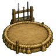

Home › Start here › Ninja ranks and the rank exam
Ninja ranks and the rank exam
Every ninja can climb the ranks genin, chūnin and jōnin; the village leader is the Kage. A rank shows as a small bonus on the pawn's health tab, and each one replaces the last.
Genin at 200 TP by the academy exam, chūnin at C class by exam, jōnin by the Kage's trial mission at B class, and the village leader is always the Kage. Training Points come from training, classes, sparring, missions, exams and fights.
Ranks with Training Points
Ranks follow the ninja's Training Points class and time served:
- Genin: 200 TP earned, then the academy graduation exam (13 or older for under-18s). A genin learns every Academy technique for free, and Academy techniques never count toward the build.
- Chūnin: a year (60 days) as genin, C class (500 TP) and Melee or Shooting 6, then the rank exam or a win at the chūnin exam.
- Jōnin: two years (120 days) as chūnin and B class (1,500 TP). Jōnin is the Kage's call: a letter calls the chūnin for the jōnin trial, and the next B-rank or harder mission they finish on their feet makes them jōnin (+50 TP). Brought down on the mission, they can try again after 30 days.
- Kage: the village leader is always the Kage and holds the kage rank; nobody else does. A colonist who was kage without leading steps back to jōnin. The ninja villages' leaders are titled Kage too; the Black Ink, the Venator and the samurai houses keep their own titles.
Every couple of weeks the rank exam event comes round for eligible colonists. The chance of passing starts at 55% and stays between 30% and 92%. Passing gives a good mood for ten days; failing a small dip for five.
Hover over a rank on the health tab to see how long the pawn has held it, what the next rank needs and whether they're ready.
Growing
- Training: one session a day at a training post, training dummy, battle ring, chakra study apparatus or star-watching platform gives 10 TP (15 with the sensei near) as well as skill. There is no solo cap any more.
- Sensei and student: select a colonist below jōnin and use the Sensei button to pick a jōnin or the Kage who outranks them (or the ideoligion's Sensei role). While the sensei is awake within 15 cells, the student's sessions give half as much again. The sensei gains Social.
- Sparring: right-click a

battle ring and pick "Spar with" a partner; both get a session's TP. - Classes: ninja classes and academy lessons (and Progression: Education's) give 5 TP once a day.
- Missions: D and C 5 TP, B 10, A 20, S 25. Exams: the chūnin exam gives 100 TP, the jōnin trial 50.
- Fights: 3 TP a technique cast at enemies (at most 15 a day); other casting 1 TP per 5 casts (at most 3 a day).
The academy (Biotech)
Colonist children aged 6 to 17 with no rank learn at the academy: Biotech lessons, the school desk and academy classes give 5 TP once a day like other classes. They sit the academy graduation exam from 13, once they have earned 200 TP. Graduating gives a good mood for ten days. A child without chakra awakens it the first time they study. Adults without chakra can awaken it with a sensei at the chakra study apparatus; see Becoming a ninja.
Missions by rank
Like the role-play, a ninja's rank decides which missions they can take: genin D and C, chūnin up to B, jōnin up to A, and ANBU and the Kage S. Accepting a mission no ninja of yours can take is refused with the reason.
The chūnin exam
About once a season after the truce ends, your sworn village (or another friendly village) invites your genin to the chūnin exam. Only genin of C class may enter. Pick up to three of them and send them; the exam is played out at once in three stages:
- Written test: Intellectual and Social.
- Survival trial: ninja level and the better of Melee or Shooting.
- Final duel: ninja level, Melee and Shooting.
Each stage has a roll on both sides, so an underdog can win. Winners become chūnin on the spot, even without a year as genin, and gain 100 TP. Those beaten in the trial or the final may come back bruised. One letter tells the whole tournament, round by round, against genin from the other villages. The host's goodwill rises for every finalist and winner.
Ninja from other villages carry ranks too, matching how strong their loadout is: their leaders are Kage, their elites jōnin.
The ninja world panel
The ninja world button on the bottom bar opens one screen with everything about your place in the ninja world: the village you're sworn to and its perks (or how to join), any colonists marked missing-nin, the truce countdown, how many days until a chūnin exam invitation can come and which village would host it, goodwill and relation with every NFRP faction, and a list of your ninja with rank, class, days at that rank and whether they're ready for the next exam. Click a ninja's row to select them.
Leader orders
The Kage (the village leader) gets three buttons when selected on their own:
- Rally the village (once a day): everyone on the map is rallied for about six hours (+5% consciousness), and everyone but the leader feels "rallied by the leader" (+6 mood for a day).
- Call to arms (once a day): drafts every ninja on the map who can fight, and all of them are "called to arms" for about three hours (faster movement, +3 shooting accuracy, +3 melee hit chance).
- Assign a mission (once every 10 days): pick a rank from D to S and a ranked mission comes in from your sworn village, or the friendliest village that gives missions. It's greyed out with the reason if no village can give one.
The ninja world panel shows the leader and whether each order is ready.
The chūnin exam window
The hidden villages hold the chūnin exam, and Kaedegakure invites your genin. Choose up to 3. They face a written test, a survival trial and the final duels against genin of other villages. Those who win their final duel are promoted to chūnin on the spot, whatever their time as genin. Only genin of ninja level 6 or more may enter.
The three with the highest ninja level are ticked to start with. A fourth tick does nothing while three are picked; untick one first.
The hidden villages hold the chūnin exam, and Kaedegakure invites your genin. Choose up to 3. They face a written test, a survival trial and the final duels against genin of other villages. Those who win their final duel are promoted to chūnin on the spot, whatever their time as genin. Only genin of ninja level 6 or more may enter.
The hidden villages hold the chūnin exam, and Kaedegakure invites your genin. Choose up to 3. They face a written test, a survival trial and the final duels against genin of other villages. Those who win their final duel are promoted to chūnin on the spot, whatever their time as genin. Only genin of ninja level 6 or more may enter.
The chūnin exam in Kaedegakure:
Aiko (level 9):
- passed the written test.
- got through the survival trial, outlasting Sora Ibuki, a genin of Haigakure.
- won the final duel against Tsubaki Hamon, a genin of Nagisagakure, and was named chūnin!
- gained 600 ninjutsu XP.
Kenta (level 8):
- passed the written test.
- got through the survival trial, outlasting Daichi Sen, a genin of Tetsugakure.
- lost the final duel to Tsubaki Hamon, a genin of Nagisagakure.
- gained 300 taijutsu XP.
- came back bruised.
Mei (level 7):
- failed the written test.
- gained 60 genjutsu XP.
Kaedegakure was impressed: goodwill +11.
The results come as a letter. Without promotions it is titled "Chūnin exam results". Rival genin are named when the living world is on; otherwise they are "a genin of" another village. When your own hidden village hosts the exam, the villages that came to watch gain goodwill instead.
The window closes and a message says: You declined the chūnin exam.